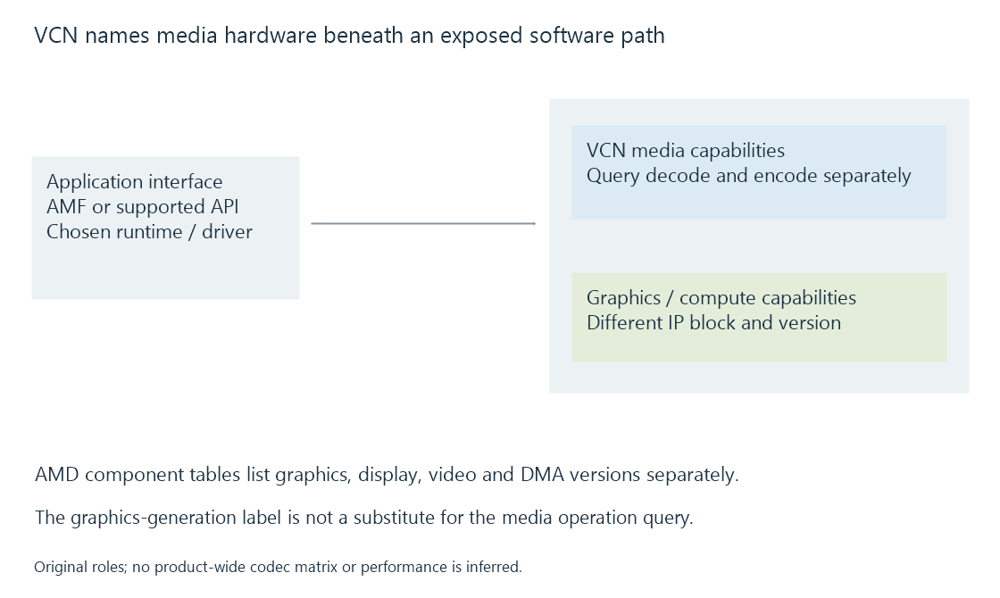

AMD Video Core Next (VCN)
VCN is AMD’s video-engine family associated with supported media decoding and encoding operations, distinct from its graphics architecture and the software API used to access it.
VCN is AMD's video-engine family. It describes media hardware beneath the application and driver interfaces that expose supported decoding and encoding operations.
An application can reach applicable AMD media paths through AMF or another supported platform interface. The VCN name belongs to the hardware layer rather than to a container or video codec.
Graphics and media IP have their own versions
AMD's Linux hardware-component table lists graphics, display, video and DMA components in separate columns. Those versions identify different blocks within a product.
For example, its RAVEN/PICASSO entry associates a graphics-core version with VCN 1.0; CARRIZO/STONEY uses the earlier VCE/UVD pair. The distinction identifies a component family, rather than supplying a complete media support or performance table.

A graphics-generation number should therefore not be substituted for the media IP version. Likewise, a product-name number alone does not establish a particular decode/encode configuration.
The exposed operations are queried separately
Source reconstruction and target compression have different requirements. A device can accept one compressed input while offering another set of output encoders.
In an Emby conversion exercise, HEVC Main 10 input and H.264 output need separate decode and encode paths, with a usable picture-processing relationship between them.
The software runtime and driver expose those operations to the application. Current hardware information, implementation capability and the actual selected media configuration cooperate in the answer.
Legacy software names can outlive the old block name
AMF's current decoder documentation still includes UVD-prefixed component identifiers for several codecs. A component name can remain stable while the implementation uses a different supported hardware generation.
This mirrors a broader API pattern: names preserve compatibility with application code. Reading an identifier as a hardware-probing result would confuse the software contract with the selected physical device.
The UVD article explains the legacy decoder name, while AMF explains the component interface.
The complete job still has picture and memory work
VCN's codec operation can cooperate with GPU processing, driver services or CPU-side application work. Scaling, subtitle composition and colour transformations belong to their selected processing path.
See Also
- AMD Advanced Media Framework (AMF)
- AMD Unified Video Decoder (UVD, legacy)
- AMD Video Coding Engine (VCE, legacy)
- Fixed-function media engines
- Video Acceleration API (VA-API)